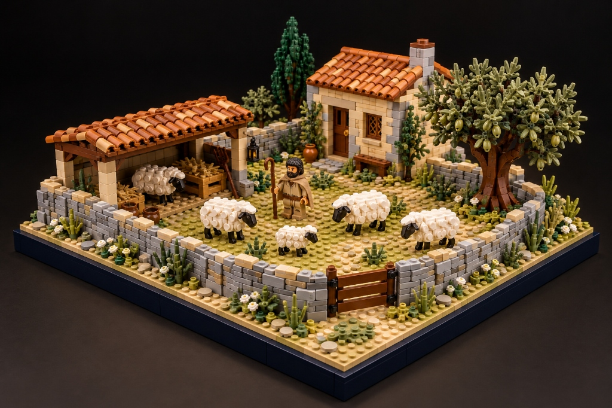

ILIAD XVIII.490–496 · SCENE 1/5 — BRIDAL TORCH-PROCESSION & HYMENAIOS
THESIS: IMAGETEXT → WORLDTEXT (§3–4)
SCENE: set.shield-diorama-wedding.mpd
COMPILER: GEERTZ 6-LAYER THICK PROMPT

ILIAD XVIII.490–496 · WEDDING
2D IMAGETEXT → 3D WORLDTEXT
«Νύμφας δ᾽ ἐκ θαλάμων δαΐδων ὕπο λαμπομενάων ἠγίνεον ἀνὰ ἄστυ, πολὺς δ᾽ ὑμέναιος ὀρώρει…» — Iliad XVIII.492–493
OPERATION DESCRIBE §3–4 · THICK PROMPT → 3D WORLDTEXT